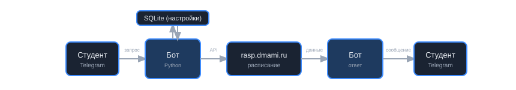
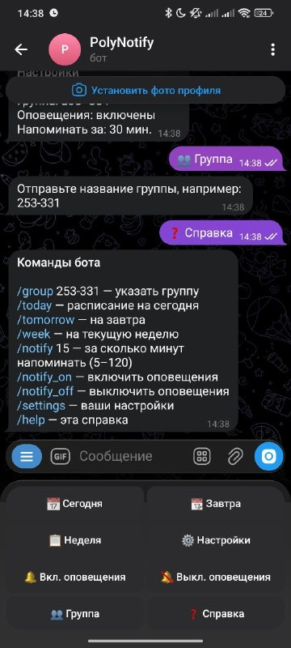
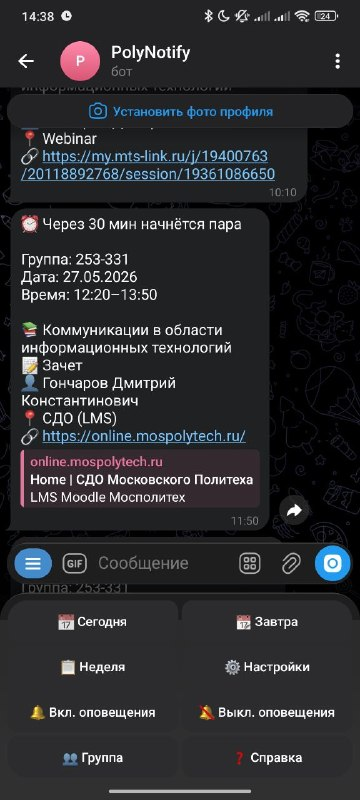
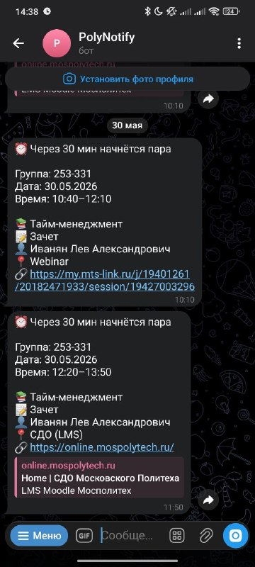

О проекте
Проект разработан в рамках дисциплины «Проектная деятельность» для студентов Московского политеха. Целевая аудитория — учащиеся, которым нужно быстро узнать расписание и получить напоминание перед парой.
Функциональность
- Выбор учебной группы (например, 253-331)
- Расписание: сегодня, завтра, неделя
- Напоминания за 5–120 минут до начала занятия
- Включение и отключение оповещений
- Клавиатура с кнопками и меню команд
Технологии
- Python 3 — язык разработки
- python-telegram-bot — взаимодействие с Telegram Bot API (long polling)
- mospolytech_api — получение расписания
- SQLite — хранение настроек пользователей
- VPS — развёртывание бота (systemd)
Как работает бот
Цепочка работы: студент пишет боту → бот читает настройки из SQLite (группа, оповещения) → запрашивает расписание у rasp.dmami.ru → формирует ответ и отправляет студенту в Telegram. Расписание в базе не хранится. Фоновые напоминания (раз в минуту, по Москве) идут по той же схеме: настройки из SQLite, расписание с API, сообщение студенту.

Интерфейс бота
Примеры работы PolyNotify в Telegram: настройки, справка, напоминания перед парами.



Ограничения
Бот не отслеживает переносы и изменения расписания — только напоминания перед занятиями по текущим данным API. Официальный сайт университета остаётся основным источником при спорных случаях.